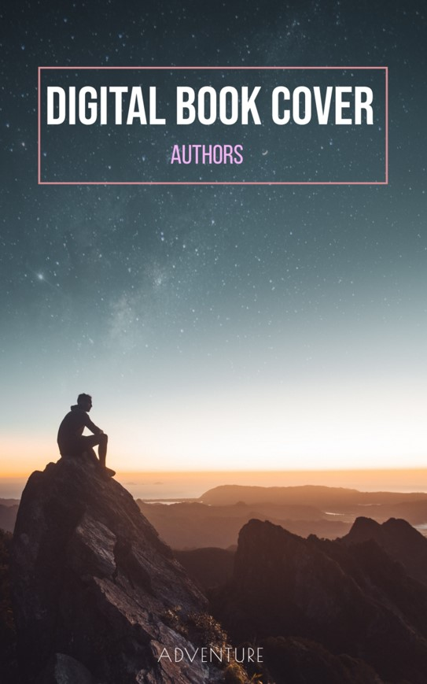

Book Cover
I create this cover by PS. First, I found two pictures, one is a man on the top of a mountain, the other is the starry sky. The sky was set into the back layer, and I changed the colors of the sky. The man was put on the top layer, I added the contrast of this picture, and also adjusted the colors in this picture. Finally, I connected these two pictures with a smooth transition.
I used three different types of words in this book cover. The top one was most highlight because it was the title of this book. I used pink to label authors part. The bottom one was the publisher or other information which was not important, so I used the thin lines in the bottom words.